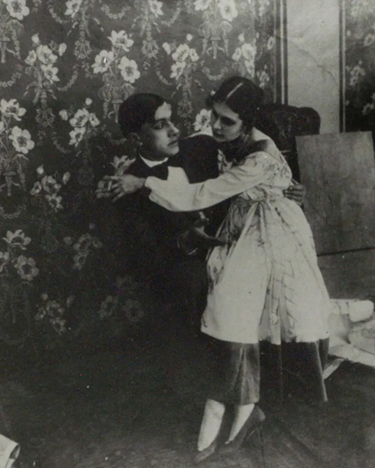

Владимир Маяковский интересовался не только поэзией и живописью. В 1913 году он дебютировал в театре: сам написал трагедию «Владимир Маяковский», сам поставил ее на сцене и сыграл главную роль. В этот же год поэт увлекся кинематографом — начал писать сценарии, а спустя год впервые снялся в ленте «Драма в кабаре футуристов №13» (картина не сохранилась). Во время Первой мировой войны Владимир Маяковский состоял в авангардном объединении «Сегодняшний лубок». Его участники — Казимир Малевич, Давид Бурлюк, Илья Машков и другие — рисовали патриотические открытки для фронта, навеянные традиционным народным лубком. Для них создавали простые красочные картинки и писали короткие стихи, в которых высмеивали врага.
 В 1915 году Маяковский познакомился с Осипом и Лилей Брик. Это событие в своей автобиографии поэт позже отметил подзаголовком «радостнейшая дата». Лиля Брик на долгие годы стала возлюбленной и музой Маяковского, он посвящал ей стихи и поэмы и даже после расставания продолжал признаваться в любви. В 1918 году они вместе снялись для картины «Закованная фильмой» — оба в главных ролях.
В ноябре того же года прошла премьера пьесы Маяковского «Мистерия-буфф». Ее поставил в Театре музыкальной драмы Всеволод Мейерхольд, а оформил в лучших традициях авангарда Казимир Малевич. Мейерхольд вспоминал о работе с поэтом: «Маяковский был сведущ в очень тонких театральных, технологических вещах, которые знаем мы, режиссеры, которым обучаются обычно весьма длительно в разных школах, практически на театре и т. д. Маяковский всегда угадывал всякое верное и неверное сценическое решение, именно как режиссер». «Революционный народный спектакль», как называла его переводчица Рита Райт, ставили еще несколько раз.
Спустя год началась напряженная эпоха «Окон РОСТА»: художники и поэты собирали горячие темы и выпускали агитационные плакаты — их нередко называют первой советской социальной рекламой. Работа шла напряженно: и Маяковскому, и его коллегам не раз приходилось задерживаться допоздна или работать ночью, чтобы выпустить партию в срок.
В 1922 году Владимир Маяковский возглавил литературную группу «Левый фронт искусств» (позже «левый» в названии сменилось на «революционный»), а вскоре и одноименный журнал творческого объединения. На его страницах публиковали прозу и стихи, снимки авангардных фотографов, смелые архитектурные проекты и новости «левого» искусства.
В 1925 году поэт окончательно расстался с Лилей Брик. Он уехал на гастроли во Францию, затем отправился в Испанию, на Кубу и в США. Там Маяковский познакомился с переводчицей Элли Джонс, между ними вспыхнул короткий, но бурный роман. Осенью поэт вернулся в СССР, а в Америке у него вскоре родилась дочь — Элен-Патриция. После возвращения из США Владимир Маяковский написал цикл «Стихи об Америке», работал над сценариями советских фильмов.